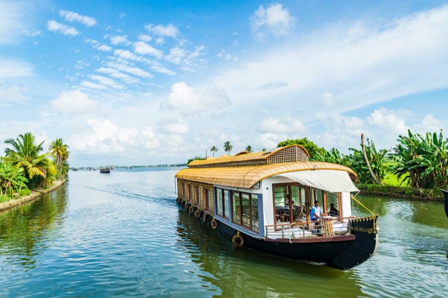
Kerala
Munnar, Thekkady and Alleppey
Share a destination, rough dates and who is travelling.
Our team gets back to you to discuss your ideas.
Together we shape the trip around what you want.
Choose a package to see its day-wise itinerary, then send an enquiry for pricing and availability.
Showing 19 packages

Munnar, Thekkady and Alleppey
Munnar, Thekkady, Alleppey and Kovalam
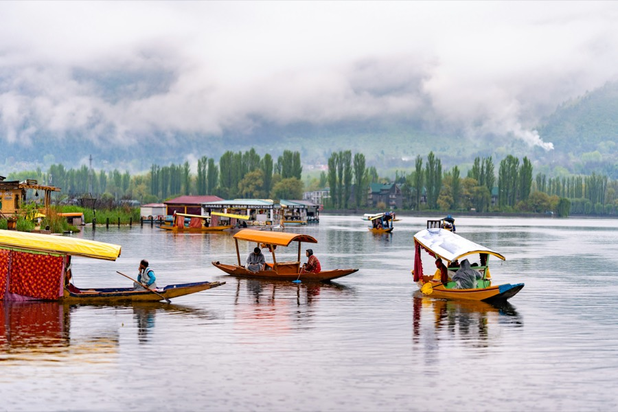
Srinagar, Gulmarg and Pahalgam
Srinagar, Gulmarg, Sonamarg and Pahalgam
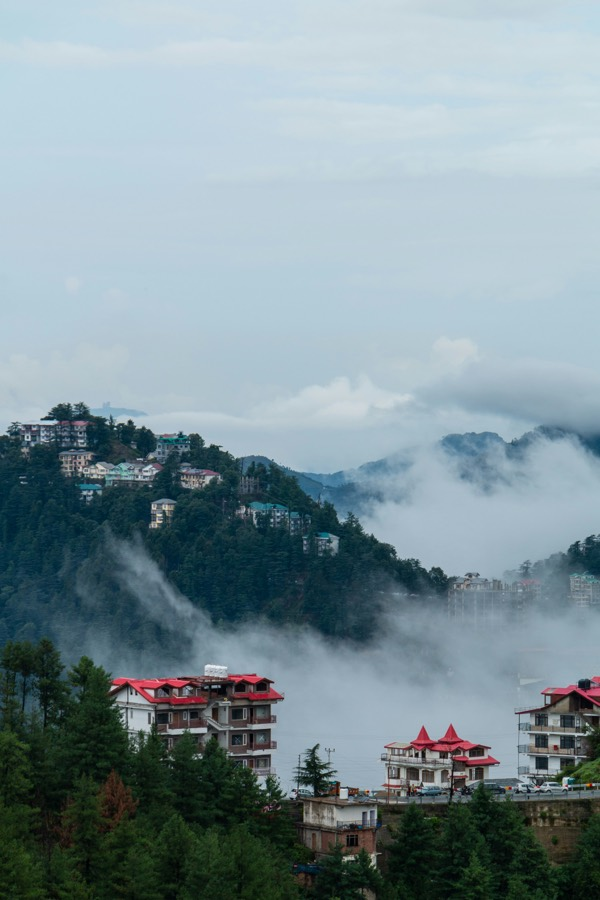
Shimla, Kufri, Manali and Solang Valley
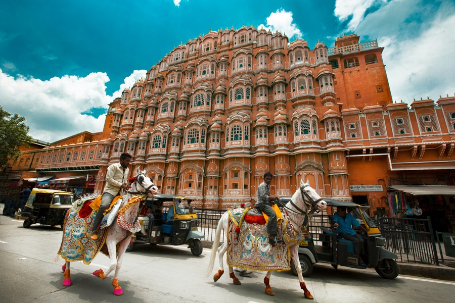
Jaipur and Jodhpur
Jaipur, Jodhpur and Jaisalmer, with a desert camp
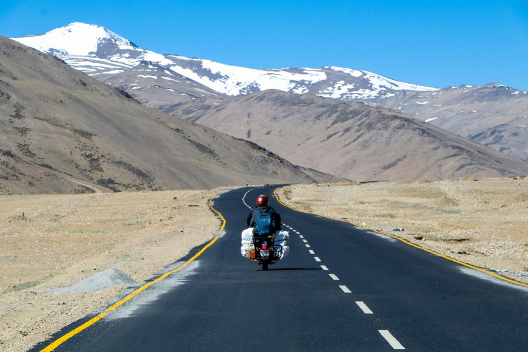
Leh, Nubra Valley and Pangong Lake
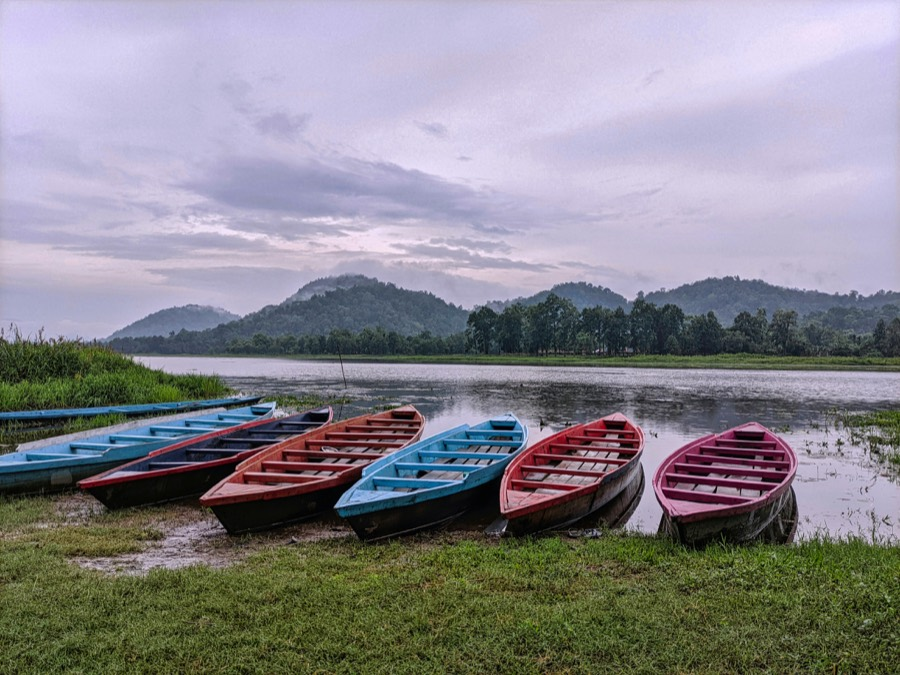
Kaziranga, Shillong and Cherrapunji
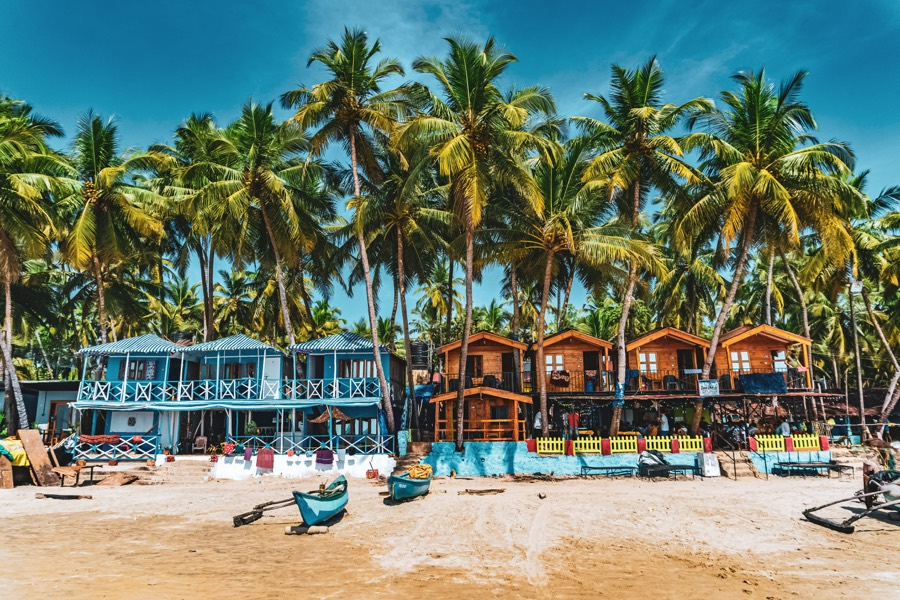
North Goa, South Goa and Old Goa
North Goa, South Goa, Old Goa and a leisure day
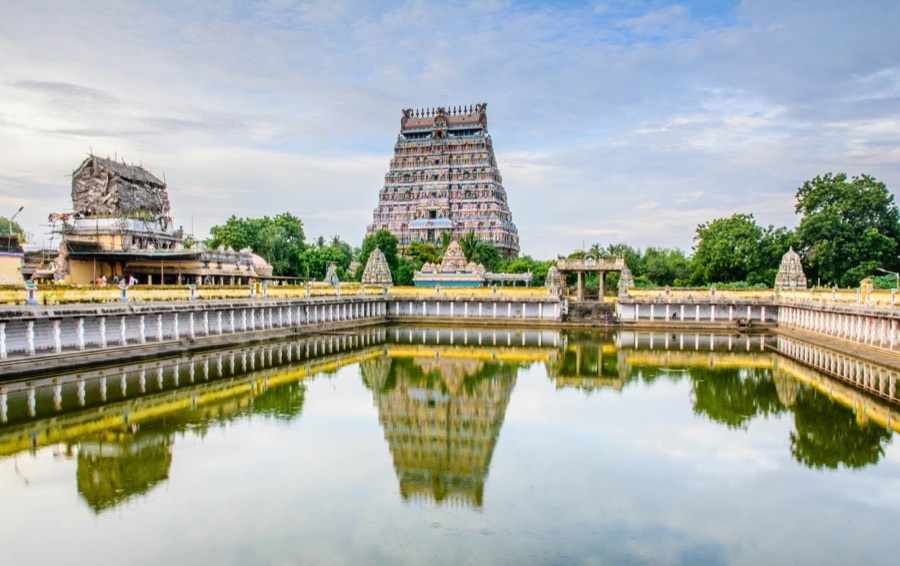
Mahabalipuram, Pondicherry, Thanjavur and Madurai
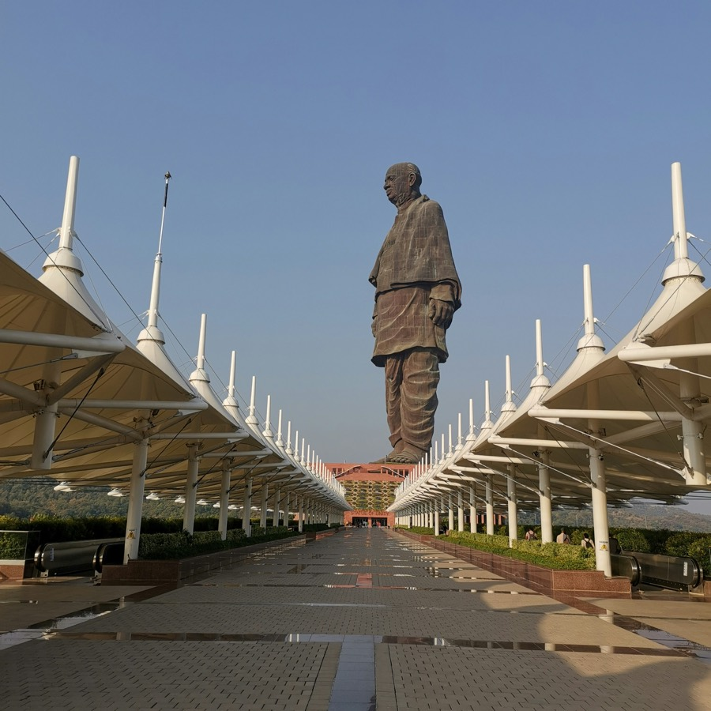
Ahmedabad, Statue of Unity, Dwarka and Somnath
Yamunotri, Gangotri, Kedarnath and Badrinath
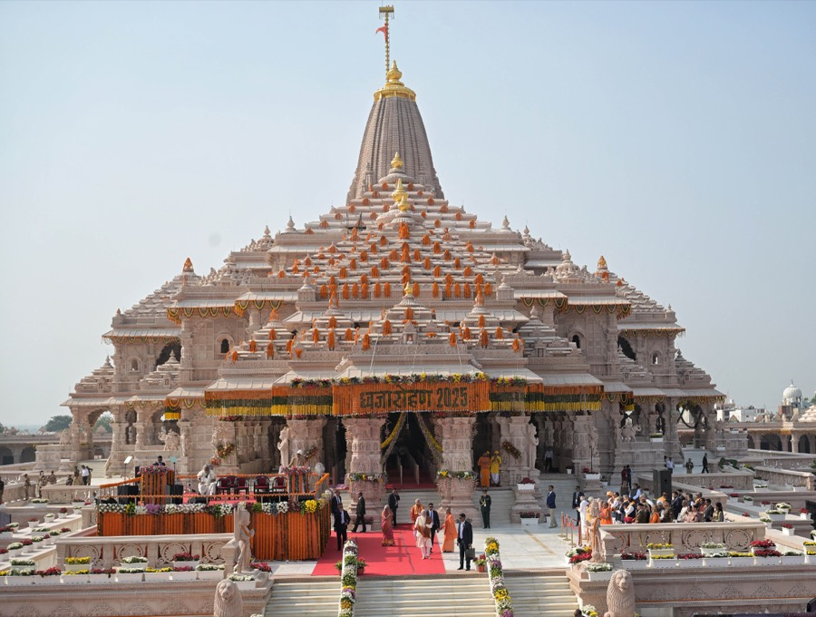
Ayodhya darshan and the Saryu River Aarti
Ayodhya, Varanasi ghats and Sarnath
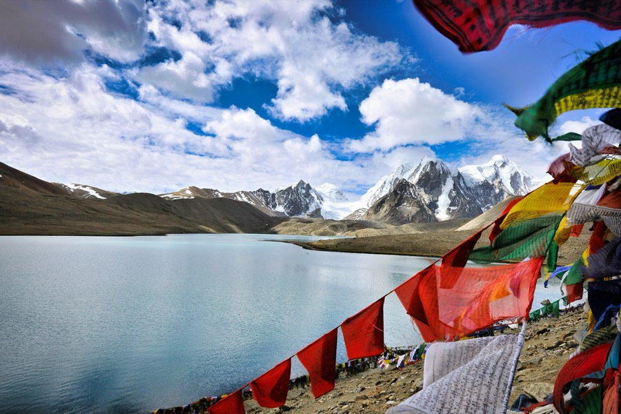
Gangtok, Tsomgo Lake and North Sikkim
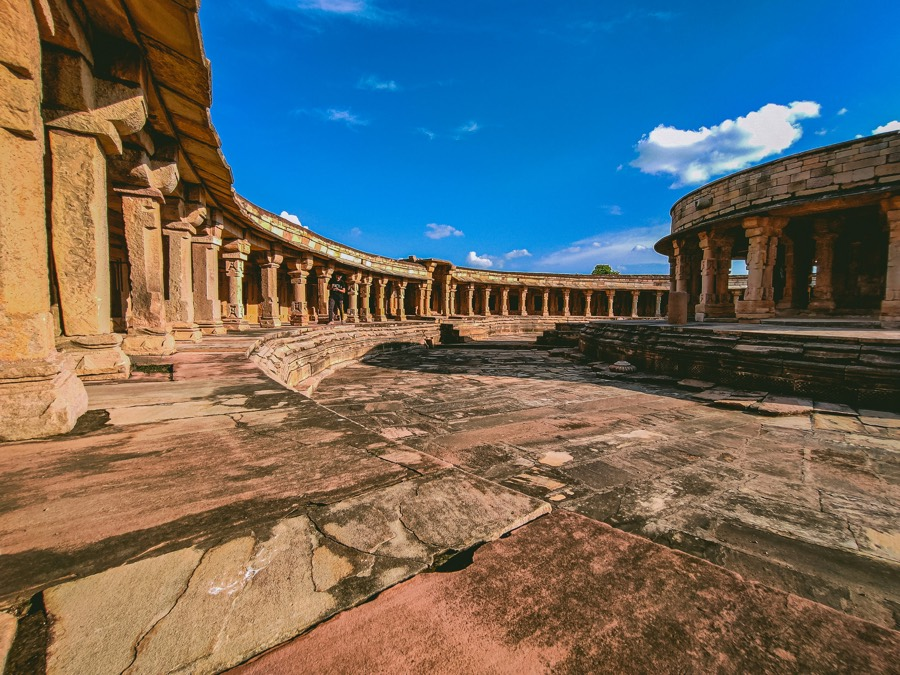
Bhopal, Sanchi, Khajuraho, Orchha and Gwalior
Mumbai, Lonavala, Pune and Mahabaleshwar
Prices and inclusions are not shown on this page. Send an enquiry and our team will get back to you.
Share a few details and we’ll get back to you.